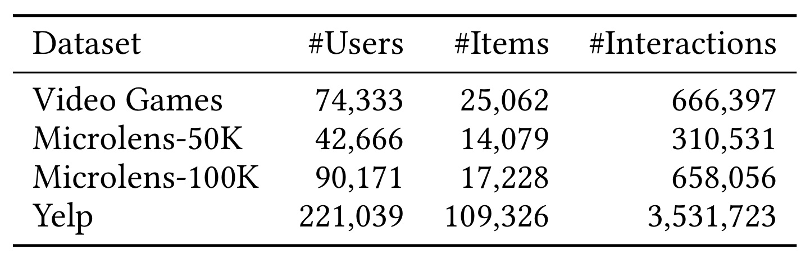
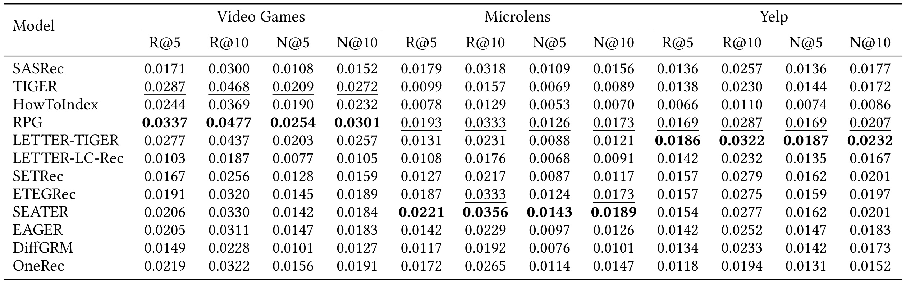
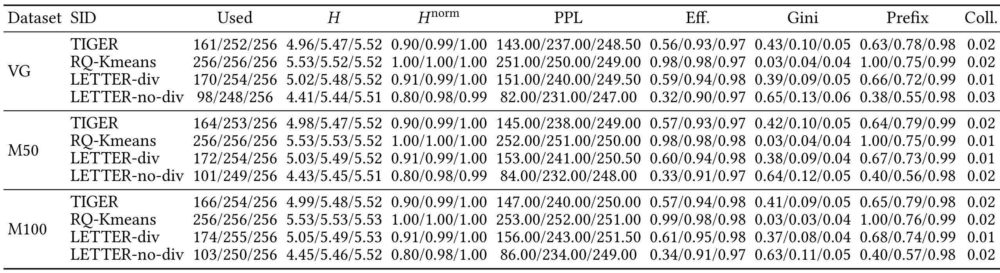
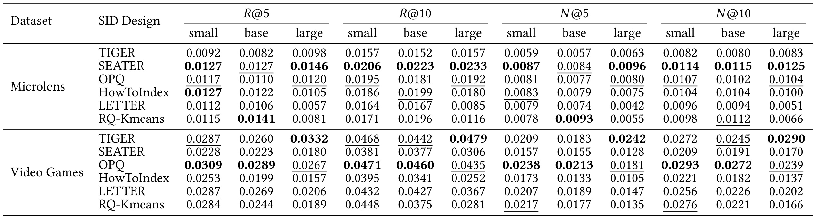
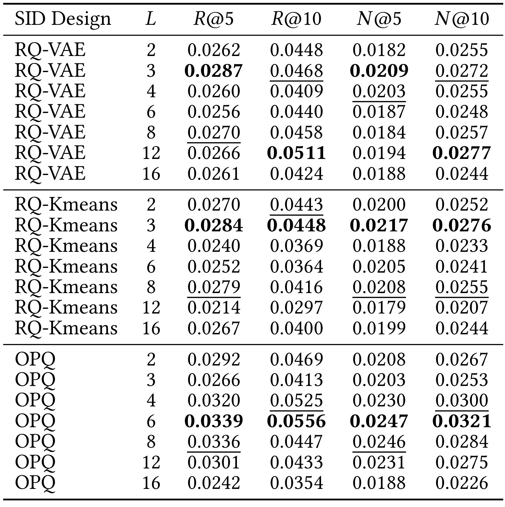
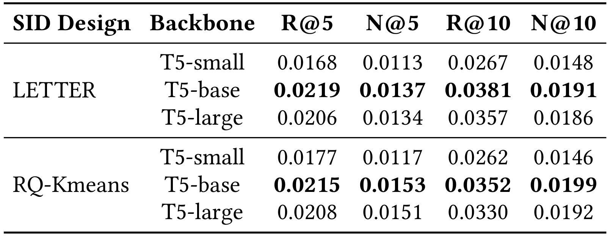
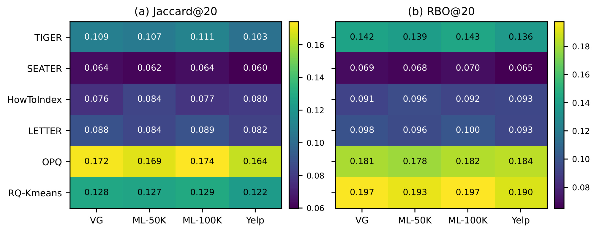

What Makes a Good Semantic ID for Generative Recommendation? A Reproducibility Study / 什么样的语义 ID 适合生成式推荐？一项可复现性研究
作者：Yufei Chen、Junchen Fu、Jujia Zhao、Yukun Zhao、Zhaochun Ren。前两位为共同一作；第一作者主机构为山东大学，合作机构为格拉斯哥大学、莱顿大学。
来源：arXiv，v1 首次公开于 2026-09-21；记录日期为 2026-09-23。论文入口：arXiv:2609.24430。代码：SID-Repro，本轮访问返回 HTTP 200，未执行训练复现。以下数值来自论文原表，分析性推断均与作者实验证据分开。
1. 背景和问题
语义 ID 的构造策略、码本组织和编码长度差异很大，而既有研究的数据集、模型和训练流程又不一致，因此这些设计对推荐效果的真实影响仍不清楚。这是摘要与引言核心问题的压缩译述。本文研究的对象不是一种新量化器，而是如何判断已有标识设计的有效性。作者把完整推荐系统的表现与标识本身的性质分开检查，避免把一个系统的整体胜利直接归因于它选用的量化家族。
在生成式推荐里，物品通常不能简单等同于自然语言标题。标题可能重复，描述有同义表达，模型生成一段合理文本也未必能定位到真实库存中的唯一物品。另一端的纯随机物品编号虽然没有歧义，却没有给相近物品留下可以共享的语义结构。语义标识试图在这两者之间建立接口：将物品编码成若干离散符号，让推荐模型根据历史交互逐个生成符号，最后通过字典恢复目标物品。编码空间的组织方式因此会影响生成难度、参数共享和最终检索结果。
这个接口包含几个容易被混在一起的问题。两个语义相近的物品是否使用相近的代码，属于表示问题；某些码字是否长期不被使用，属于空间占用问题；模型能否生成完整且合法的代码，属于可生成性问题；生成出的物品是否符合特定用户下一阶段的偏好，则是推荐问题。这些目标之间有关联，却没有逻辑上的必然等价关系。把全部物品均匀分到不同码字可以使利用率看起来很好，但如果这种划分破坏了用户兴趣结构，预测仍可能变难。
已有方案恰好在这些轴上做出不同取舍。TIGER 使用残差量化变分自编码器，LETTER 在相关编码基础上加入语义、协同与多样性正则；SEATER 采用树结构，RPG 使用优化乘积量化并配合并行预测，其他系统还有集合式标识、扩散解码和行为语义双路结构。因而“使用同一种量化方式”不代表两个完整推荐器相同，“同样使用协同信息”也不代表信号进入的位置与训练目标相同。若只按这些大类给方法贴标签，就很难解释最终排名的变化。
作者将问题拆成四个研究问题。首先，在共同数据划分和评分器下，哪些完整系统表现较好？其次，更均衡的码本占用是否伴随更高推荐质量？第三，增加骨干规模或者标识长度能否持续获益？最后，离散化之后是否保留原始语义空间中的近邻关系？这四个问题覆盖结果、结构、资源扩展和几何性质，彼此补充。它们也要求不同的实验控制：比较工程上实际使用的系统要保留各自设计，解释某个标识属性的作用则需要固定其他组成部分。
本文最需要保留的阅读边界，是完整系统比较与受控标识比较属于两层证据。第一层统一预处理、切分与评分，但保留各方法自己的训练和推理设计；第二层固定 TIGER 框架与训练协议，主要改变标识分配及有关规模设置。前者适合回答“哪个现成方案值得作为起点”，后者更接近回答“在这套生成器里，改变代码结构会怎样”。不能把前者中 RPG 的优秀成绩理解成所有 OPQ 编码都更好，也不能把后者里某种编码失利推广到它与专门解码器联合设计的完整系统。
研究的另一个重点是阻止代理指标替代最终目标。码本熵、有效使用量、碰撞率都容易观察，也常用于诊断训练塌缩，但这些指标并不直接包含用户条件。一个码本可能拥有漂亮的全局频率分布，却把热门用户行为集中在难以区分的前缀上。相反，一个非均匀码本可能适应真实物品分布，让大部分预测路径更容易学习。因此作者没有把利用率当成单一排序标准，而是在多个数据集和一个多样性正则消融中检查它与推荐结果的关系。
同样，模型变大和编码变长都不是单纯增加“能力”的操作。更长代码提供更多区分空间，却要求模型正确完成更多次离散选择；更大预训练骨干增加可训练参数，也改变了小规模行为数据上的优化条件。一个实验中看见退化，可以说明当前配方的扩展不稳定，却不能直接说明大模型本身不适合推荐。本文增加一个更大的 Microlens 子集来检查数据规模这一变量，正是为了避免把数据不足与模型能力作过度简化的对应。
语义保持的检查也有实际必要。若希望语义标识用于跨任务迁移、相似物品替代或内容条件检索，仅看推荐命中率不够。离散代码是否找回了同一批近邻，以及是否把最相近的几个物品排在前面，是两种不同要求。前者关心集合，后者关心靠前位置的次序。本文用两种度量分别观察它们，最终发现不同量化方式具有互补优势。这比笼统宣布某个标识“更有语义”更可检验。
本文所有主要排名实验都在已见物品范围内进行。测试真实交互中的冷物品被移除，没有剩余真实目标的用户也被排除。这一设置可以减少代码字典未覆盖物品的干扰，但它把结论限定在暖启动评测上。不能因为输入中含有物品内容，就宣称研究已经证明冷启动泛化，也不能把语义邻域恢复得好等同于新物品推荐成功。论文把其他骨干、其他解码规则、更大目录和冷启动评测留给未来工作，这些范围限制本身构成结果解释的一部分。
值得注意的是，原 PDF 保留了会议模板中的旧年份和占位 DOI，正文页边却明确标出此次 arXiv 版本日期。记录来源时应使用可核验的预印本提交信息，不应将模板中的二〇一八年误写成论文发布时间，也不应把占位 DOI 当作正式出版标识。本文提供了代码入口，降低了后续复现的起步成本，但本笔记只是原文精读与事实核验，不代表代码已经在本地跑通，也不代替跨随机种子、跨预算的重新验证。
2. 方法
2.1 语义标识与生成任务
论文先定义用户历史到目标物品的生成问题。原始交互序列中每个物品通过同一个标识函数变成多层代码，输入和输出因此都进入离散代码空间。这个过程不是简单给原编号换一个名字：代码层之间可以共享前缀，而不同层的码本决定了可表达组合。合法代码到物品的恢复还依赖码表，因此碰撞处理也影响这一接口。原文的标识定义为：
符号解释：$i$ 是物品，$q$ 是标识分配函数，$L$ 是代码长度，$z_{i,\ell}$ 是该物品在第 $\ell$ 层的符号，$\mathcal C_\ell$ 是对应码本。该式只规定了表示接口，没有规定代码必须由哪一种量化器产生。聚类、残差量化、乘积量化或树结构都可以实现这种映射，但其合法组合集合与语义组织不一样。
符号解释：$u$ 表示用户，$i_1^u$ 到 $i_t^u$ 是此前的交互物品，$Z_u^t$ 是映射后的历史标识序列。这是原文对输入的定义；模型读取的是历史行为的编码形式，而不是只根据目标物品本身的语义相似度做近邻搜索。因而物品编码的几何质量只是推荐链路的一部分，用户条件仍决定最终概率分布。
符号解释：$S_u^t$ 为原交互历史，$\theta$ 为生成器参数，$z_{i,<\ell}$ 为已经生成的代码前缀。等号采用有效标识与物品一一对应的假设。这是标准从左到右生成的表达，不能据此认为完整系统比较中的并行或扩散方案也必须遵循相同解码顺序。乘积结构说明，前面符号的选择会限制后面路径；代码越长，即使拥有更大组合容量，也会增加完成整条路径的要求。
训练通常最小化目标标识的负对数似然。为说明原文文字所指的目标，可把上式写成以下等价损失形式；这是对原文训练描述的展开，不是作者提出的新损失：
符号解释：$\mathcal D$ 是训练前缀与下一次交互组成的样本集合，$\mathcal L_{\mathrm{NLL}}$ 是负对数似然和。具体方法还可以加入重建、对比、多样性或协同正则。训练时真实目标提供每一级监督；推理时没有真实前缀可用，必须从当前生成路径继续选择并映射回合法物品。这种训练与推理差异解释了为什么仅优化编码重建或者码本分布不足以确保最终检索效果。
2.2 两层对照与共同评测协议
作者首先统一数据入口。对交互做相同过滤后，将所有记录按全局时间排序，以七成、一成三、一成七的比例划分训练、验证和测试。这样的切分使验证和测试事件在全局时间上位于训练之后，避免每个用户单独留最后一个事件时，不同用户时间段交错造成的某些未来信息风险。训练以各历史前缀预测下一项；评测在截止点对每个用户预测一次，把对应后续区间内的多个暖物品视为相关集合，再对用户均匀平均。
完整系统实验保留官方方法中的默认标识和推理机制，优先忠实复现而不是穷尽每个数据集的最优超参数。受控分析则使用固定的标识实现和 TIGER 协议，将训练目标、解码和评分维持一致，改变标识设计、骨干大小或代码层数。因此同一方法在两层实验中的数值可能不同，这并不自动构成前后矛盾。比较之前要先确认系统层级、数据子集和解码协议一致，不能横跨两张表直接拼接增益。
受控推理使用前缀树约束，只沿合法代码路径生成候选。共同后处理去除用户训练历史中出现过的物品；候选不足时用训练阶段的热门物品补齐，保证输出固定数量。这个规则统一了合法推荐数量，但也引入了一个需要后续诊断的因素：最终列表不仅反映生成器，还可能包含兜底候选。若两个标识设计的合法生成率不同，热门填充比例也可能不同。原文没有在主表逐项报告这些比例，因此不能从总分独立反推出生成器本身的成功率。
为了明确多目标评测的含义，以下给出常用召回率定义。该式用于解释原文所报告的指标，不是论文新增算法：
符号解释：$R_u^K$ 是后处理后的前 $K$ 个推荐物品，$G_u$ 是截止点之后保留下来的暖物品真实集合，空集合用户不进入评测。分母不是固定为一个下一项，因此此处的数值不能直接与每用户单目标的留一法命中率比较。用户均匀平均也意味着长历史用户不会仅因真实目标更多而在整体均值里拥有更多权重。
符号解释：$R_{u,r}$ 为排序第 $r$ 个物品，指示函数表示是否命中真实集合，分母是二元相关标签下的理想折损增益。这是理解原文 NDCG 的标准形式；名次越靠前，单次命中的贡献越大。它与召回率共同说明同一编码长度可能在前五与前十结果上表现不同，选择配置时必须先确定业务对应的截断位置，而不是只宣布一个总体最优长度。
2.3 码本占用、扩展性与语义邻域诊断
码本分析比较三个数据集上的四种三层标识，每层有二百五十六码字，报告使用数、熵、困惑度、有效使用率、基尼系数、前缀利用率和碰撞率。作者主要用一级归一化熵做跨数据集可视化，因为更深层在这些设置里接近饱和。原文直接给出的核心统计量是：
符号解释：$p_{1,c}$ 是物品在第一级使用码字 $c$ 的频率，$\mathcal C_1$ 是一级码本，归一化熵为一表示完全均匀使用。该分布以物品编码为对象，而非模型条件概率，也不是每个用户推荐结果的多样性。观察到更高熵只能说明占用更均衡，不能直接说明兴趣区分更好，更不能当成点击率提升。
扩展性分析沿两个轴展开。骨干使用预训练 T5 的 small、base、large 三种规模；长度实验比较二、三、四、六、八、十二、十六层代码，并分别考察残差量化自编码器、残差聚类与优化乘积量化。训练按验证集 NDCG 提前停止，测试使用共同评测链路。这里保持训练协议有利于归因，却也限制了结论：某个大模型可能需要另行调学习率或预算，固定配方的退化并不等于经过充分优化后仍退化。
局部语义分析从参考语义空间和各标识设计中分别取得近邻列表，再比较集合与排序。集合重叠可以用以下标准定义理解：
符号解释：$N_{\mathrm{ref}}^K(i)$ 为参考空间中物品 $i$ 的前 $K$ 个近邻，$N_{\mathrm{SID}}^K(i)$ 为标识空间中的对应近邻。这个标准指标不关心共同元素在列表中的相对顺序；原文另用排序偏置重叠 RBO，给予顶部列表的一致性更大权重。本文没有在主文写出其有限截断实现和参数，因此这里不替作者补一个未经核验的特定公式。参考空间也只是选定的语义表示，并不天然等同于用户真实偏好，这决定了几何诊断与推荐质量仍需要分别观察。
3. 实验结果
3.1 数据与评测
Table 1 给出过滤后的用户、物品和交互规模，是理解不同任务难度的起点。

表中四个数据设置并非四个等价任务。游戏数据约七万四千名用户、两万五千件物品与六十六万次交互；默认短视频子集约四万三千名用户、一万四千件物品与三十一万次交互；更大的短视频子集约九万名用户、一万七千件物品与六十六万次交互；本地商户数据约二十二万名用户、十万九千件物品与三百五十三万次交互。物品数量、用户规模和交互数同时变化，因此即使同一模型的分数在不同列发生明显变化，也不能把幅度直接解释成“该模型在更大数据上退化”。不同场景的行为规律、目录结构与每用户后续相关集合都可能不同。
作者默认在主系统比较里使用较小的短视频子集，更大的子集用于额外的码本、规模及语义分析。这里的命名数字也不等于表里过滤后用户恰好达到对应整数，复现时应对照表中真实规模，而不能用名称替代数据校验。先做五核过滤再全局时序切分，能统一稀疏度入口，但这种预处理保留的是相对活跃的用户和物品，结果不覆盖所有原始长尾行为。冷物品及没有暖目标的用户进一步被评测排除，意味着最终有效评测人群还要按照截止点检查。
这张表本身不报告训练时间、显存或线上吞吐。原文说明实验使用八张高端消费级显卡，但没有为每个系统提供配对成本，因此不能把“较轻量的传统基线仍有竞争力”写成已经测得同等预算下的最优性。公平的数据协议是必要条件，却不等于完整控制了算力、调参次数和训练收敛程度。复现时最先应保存划分时间戳、用户与物品映射、过滤后的真实集合以及实际候选填充数，随后再比主表指标，否则相同算法名仍可能对应不同问题。
3.2 完整系统比较
Table 2 统一切分与评分器，同时保留方法自己的推理设置。其结果首先回答完整系统的可复现表现。

游戏数据上，RPG 的 NDCG@10 为 0.0301，高于 TIGER 的 0.0272；短视频默认子集上，SEATER 达到 0.0189，RPG 为 0.0173；商户数据上，LETTER-TIGER 达到 0.0232，RPG 为 0.0207。RPG 在这三个数据集上表现稳定，但最佳系统随数据变化，不能据此宣布某个标识设计普遍领先。同样，传统 SASRec 在短视频上的 0.0156 高于 TIGER 的 0.0089，在商户上的 0.0177 也高于若干生成方法。生成式目标本身并没有自动确保对所有数据的优势。
同族系统之间的差距尤其有解释价值。RPG 与 DiffGRM 都被本文归入使用优化乘积量化标识的方案，但游戏数据的 NDCG@10 分别是 0.0301 与 0.0127。这么大的差异说明，只知道标识家族远远不够，还要考虑预测顺序、模型训练与解码机制。相反，LETTER 的同一类正则化标识与不同生成骨干组合，结果也会改变：游戏数据中 LETTER-TIGER 为 0.0257，LETTER-LC-Rec 为 0.0105。这个比较同时改变了系统组成，不是单独骨干变量的严格消融，却足以提醒读者不要把“同样用了协同标识”当作性能等价关系。
协同信号的方向也依赖数据。LETTER-TIGER 相比 TIGER 在游戏数据略低，在短视频和商户上则更高；原文据此认为以正则方式引入协同信息相对稳健，但这种解释仍是对观察模式的总结，主表没有单独量化协同语义对齐程度。正文中的 Figure 1 将系统分数画成跨数据集曲线，Figure 2 画相对 TIGER 的差值，本笔记保留精确主表而不重复相同数值的折线。由于作者主要沿用官方超参数，小差距尤其需要跨种子和更充分调参确认。表中加粗和下划线代表点估计名次，不应在没有统计检验细节时转换为显著胜出。实际选型还需要核对重复实验波动与调参预算，才能判断这些名次是否足以支撑更换线上方案。
3.3 码本利用率
Table 3 展开每一级码本的诊断，检验更均衡的分配是否足以解释推荐成绩。

每个斜线分隔项对应第一、第二、第三层，而不是三次重复实验。游戏数据里，残差聚类使用全部二百五十六码字，一级归一化熵约为一；普通 TIGER 使用一百六十一个一级码字，熵约为零点九；带多样性正则的 LETTER 使用一百七十个，不带该正则则只有九十八个，熵约为零点八。使用码字数和频率分布是两个维度：全部码字都出现过，不代表每个码字出现得一样频繁，因此作者同时报告熵、有效使用率与基尼系数，而没有只数非空槽位。
残差聚类在三个数据设置里都呈现最均衡的一级占用，但推荐质量没有严格遵循这个排序。作者报告所有设置中，一级归一化熵与 NDCG@10 的线性相关约为负零点零二，秩相关约为负零点零八，接近零。更有针对性的证据来自 LETTER 多样性正则：它把一级熵提高约零点一一，推荐指标变化却至多零点零零二。这是同一方法族内部的结构性对照，比单纯比较四种不同算法的相关性更能说明“改善均衡不保证改善排序”。不过，样本只来自有限数据与标识配方，不能把相关接近零理解成所有场景下完全没有作用。
深层熵在表中大多接近零点九九或一，因而很难再区分方法。正文概括更深层高于约零点九八、碰撞率在约百分之一至几个百分点；表格只有两位小数，个别单元格显示零点九八或零点零三，不能将这些舍入数与正文未舍入区间当成精确一致的上下界。更关键的是，即使完整代码碰撞不严重，一级划分仍可能让用户条件预测难度不同。较高利用率可以排查塌缩，却没有直接测量语义纯度或路径可生成性。工程上应把这一表作为诊断面板，观察异常码字和分布变化，再回到用户排序指标验证收益，而不宜把最大化熵当作独立产品目标。
3.4 模型规模
Table 4 在固定框架下改变预训练 T5 的规模，展示同一种标识的扩展行为。

表格中的 small、base、large 是每项指标下的模型规模，不能把同一行十二个数字误读为不同数据集。游戏数据中普通 TIGER 的 NDCG@10 从 0.0272 到 0.0245 再到 0.0290，最终大模型最好，但中间规模退化；优化乘积量化则从 0.0293 到 0.0272 再到 0.0239，呈连续下降；残差聚类从 0.0276 到 0.0221 再到 0.0166，退化更明显。这里既有大模型受益的例子，也有下降的例子，因此准确结论是扩展不具单调保证，而不是“大模型一定更差”。
默认短视频子集又呈现不同模式。SEATER 对应标识的 NDCG@10 从 0.0114 到 0.0115 再到 0.0125，整体上升；LETTER 从 0.0096 到 0.0094 再到 0.0051，大规模设置明显下降；残差聚类在中等骨干上达到 0.0112，超过较小的 0.0098，却在更大骨干降到 0.0066。不同标识既改变目标空间，也改变学习样本在前缀上的分布，使相同参数增量不一定获得相同收益。但论文没有用这些表逐一排除所有优化原因，所以过拟合、收敛不足或超参数不匹配只能作为可能解释，不能当成已经定位的根因。
从完整系统比较转到这张表时，还应留意同名方法的语义已经变化。受控实验里的 SEATER、LETTER 等名称指相应标识设计被放进固定框架，并非再次运行全部原系统。若把它们与上一张主表的绝对分数直接相减，会把标识实现和训练协议变化误计为模型规模收益。原文 Figure 4 将本表画成多个子图，本笔记保留多层表头和精确值以便核查。本文只扩展到 T5-large，没有测试更大的当代语言模型，也没有建立规模定律；结论适用于这些数据和训练配方，后续应联合调整数据量、学习率和训练预算，再判断扩展瓶颈。若只固定训练步数而不检查收敛曲线，还可能把尚未训练充分误认为容量增加本身的负面影响。
3.5 编码长度
Table 5 固定其他评测环节，沿代码层数检查分辨能力与生成难度的取舍。

优化乘积量化从两层到六层时，NDCG@10 从 0.0267 提高到 0.0321，十六层却降到 0.0226，说明适度增加编码容量在当前设置中有益，而继续增加可能失去收益。六层还同时取得该方法表内最佳的四项指标，因而它不是只在某一个截断位置碰巧胜出。残差聚类则在三层时四项指标均为自身表内最佳，NDCG@10 是 0.0276，十二层降到 0.0207，十六层又回到 0.0244；这种回升也提醒我们，不应把非单调现象重新简化成“超过某长度就必定连续下降”。
残差量化自编码器更能说明指标选择的重要性。三层在前五个推荐上的召回与折损增益最好，但十二层在前十个推荐上分别达到 0.0511 和 0.0277，略高于三层的 0.0468 和 0.0272。因而“残差编码通常偏好紧凑长度”是趋势性判断，不能改写成所有指标都在最短代码处最优。如果实际产品只展示很少候选，前几位排序更重要；如果作为召回阶段给下游提供较多候选，较大截断位置的覆盖也可能更重要。两种目标应在验证集上分别衡量，而不是从单个最高值选择统一长度。
代码更长能增加理论组合数并减轻部分碰撞，但合法物品只占所有组合中的很小部分，生成模型必须找到正确路径而非任意组合。前缀树约束能够排除无效路径，却不会让正确路径的概率自动上升，也无法保证早期选错的分支被后续纠正。本文没有给出逐层错误率和端到端延迟随长度的完整测量，因此不能直接估算这些分数背后的服务成本。Figure 5 只是本表 NDCG@10 的曲线，本笔记不重复展示。后续更有价值的是同时记录每层条件准确率、候选合法率、热门兜底占比和生成耗时，以辨认容量收益与搜索困难分别出现在哪一级。
3.6 数据规模
Table 6 把两种在较小短视频数据上出现扩展退化的设计放到更大的子集，检验数据规模是否改变现象。

在较大子集上，LETTER 从小骨干到中骨干的 NDCG@10 从 0.0148 提高到 0.0191，大骨干为 0.0186；残差聚类从 0.0146 提高到 0.0199，大骨干为 0.0192。这两组都表现为中等规模优于小规模，大规模略低于中等规模，而没有再现较小子集里那么剧烈的下降。尤其 LETTER 在小子集上中等到大规模从 0.0094 降到 0.0051，在大子集上从 0.0191 到 0.0186，后者下降更温和。这是作者认为数据稀疏可能参与扩展不稳定的重要证据。
但这个实验不等价于严格证明数据量是唯一原因。更大的子集不仅增加交互，还改变用户和物品集合；两个数据规模的绝对指标不能被理解为同一测试集上单纯加训练样本的收益。表中也只补测了两类设计，没有覆盖所有前表方法，更没有系统扫描数据量与模型大小的二维网格。比较可以支持“更大数据下这两种设计的退化缓解”，不能支持“只要加数据所有标识就会随模型单调提升”。同样，两个较大骨干仍未超过中等骨干，说明数据扩展也没有消除验证配置的必要性。
对实践更直接的启发，是不要把标识长度、模型参数量与训练数据量当成互相独立的旋钮。某套代码把信息分散到更多前缀后，每条路径实际拥有的监督样本可能减少；增大生成器同时维持较少的路径样本，优化就可能更敏感。这个解释是机制推断，本文没有直接测量每个前缀的样本复杂度，因此需要后续证实。可执行的下一步是在固定测试目录与截止点的前提下，对训练交互做逐级下采样，并配套统计前缀频次、验证曲线和置信区间。这样才能区分数据量、目录变化与训练稳定性的影响，而不是只用两张规模表推导一个通用结论。
3.7 局部语义保持
Figure 6 分别比较近邻集合重叠和靠前名次的一致性，两张热力图属于原文同一个图对象。

左图是 Jaccard@20，优化乘积量化在四个数据集上都最高，大约介于 0.1640 与 0.1741，意味着它找回参考语义空间中同一批近邻的能力最强。右图是 RBO@20，残差聚类在四个数据集上最高，大约介于 0.1900 与 0.1974，说明它更好地保留靠前邻居的排序一致性。两张图使用的色条范围不同，不能通过“哪边更黄”比较不同指标的绝对高低。单元格为四舍五入后的值，原文给出的更精确范围应与其具体指标一起引用，而不应把两个指标混成一个统一语义分数。
二者领先并不矛盾。一个方法可能找回较多共同邻居，却把最接近的几个放在相对靠后的位置；另一个方法可能总体交集稍小，但最前面的相关邻居更一致。原文进一步检查十、二十、五十个邻居的截断位置：优化乘积量化在这些设置下始终拥有最佳集合指标，残差聚类在二十和五十处拥有最佳排序指标，在十处则有一个例外，商户数据里优化乘积量化领先约零点零零零四。这种小例外说明“总体稳定”与“每个配置都绝对最优”是不同的表述，不能为了概括而把边界抹去。
SEATER 在这组几何指标上较低，却在完整系统主表的默认短视频任务上表现最好。这是语义诊断不能取代用户排序评测的又一个例子，而且两层实验的框架不同，更不能由此简单得出几何越差推荐越好。参考空间反映的是所采用的物品语义，协同偏好可能强调不同关系；用户看完一个物品后希望看到的下一项也未必是最相似物品。原文 Figure 7 给出一个锚点的二维邻域示意，能辅助理解共同邻居的位置，但单点投影不能替代这张图的跨数据集统计。本笔记保留总体定量证据，并将它定位为语义迁移时的辅助筛选指标，而不把较高近邻重叠外推为冷启动、个性化或线上收益已经改善。
4. 总结
这篇研究最稳健的结论，是评价语义标识需要同时观察推荐质量、空间占用、可生成性、规模变化和语义几何。完整系统比较里没有跨数据集普遍最好的方案；固定框架下，均衡的一级码本不保证最佳排序，更大的骨干与更长的代码也没有单调收益；参考语义近邻的集合恢复和头部排序保持则由不同设计领先。它提供的不是一个应直接替换所有系统的标识，而是一套拆分问题和约束解释的方法。
对推荐工程，首先应把“完整方案选型”和“单模块归因”分成两组实验。前者保留专门训练与解码方式，选择能实际落地的基线；后者固定用户划分、骨干与候选后处理，只替换标识。其次，码本监控应服务于故障发现：空码字、极端集中或碰撞上升值得检查，但优化这些数值之后仍要验证用户指标。再者，标识长度的选择要与下游使用位置一致，前五与前十的结果已有不同最优点，不能把一个截断指标的胜利自动迁移到另一阶段。
对使用离散检索目标的大模型系统，这项工作提醒我们，目标表示也是学习问题的一部分。语言模型有较强自然语言能力，并不意味着它能轻松预测任意重新编码的物品路径。更换代码会改变前缀频率和局部可区分性，模型规模只解决其中部分问题。若将语义标识迁移到检索增强生成或个性化记忆，应分别验证合法目标生成、条件相关性和语义邻域结构。本文没有直接测这些应用，以上属于可验证的迁移假设，不是作者已经完成的结果。
局限至少包括四方面。第一，暖启动协议排除了冷物品和部分用户，不能回答目录增量与长尾冷启动问题。第二，受控分析以 TIGER 为固定框架，结论对其他训练目标、解码顺序和搜索预算的稳定性仍待检验。第三，主系统比较优先遵循官方配方，没有穷尽逐数据集调参，小差距与名次可能受预算影响。第四，主文没有完整披露各配置的多种子方差、候选兜底比例及配对推理成本，难以进一步拆解误差来源。还有一个解释边界是，参考语义空间本身并不是用户偏好的真值，保持其几何结构未必总是推荐任务最想要的归纳偏置。
后续复现可以按三个具体问题推进。先复现共同切分与评分，并保存冷目标移除比例、候选合法率和热门填充率，确认成绩来自何种输出组成。再选一个完整系统与一个传统基线，在相近训练和调参预算下比较，同时用固定框架做标识替换实验，避免将系统改动收益误记为量化器收益。最后建立模型大小、数据规模、代码长度的小型联合网格，报告多个随机种子、前缀错误和延迟；如果研究目标包含内容迁移，再补充冷启动测试和两类语义邻域度量。
阅读本文时最应带走的判断标准是：一个“好”的语义标识必须相对于具体数据、生成器与评测目标来定义。均匀分配、精细编码和更大参数都可能有帮助，但每一项都存在成本与适用范围。真正可迁移的经验，是先明确哪一段链路正在变化，再选择能够区分这些变化的证据。这样既能保留生成式推荐的潜力，也能避免将漂亮的中间统计量、单次榜单或抽象语义解释当作尚未完成的产品验证。